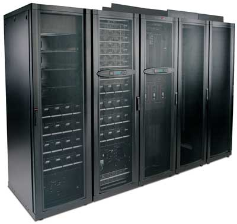
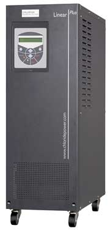
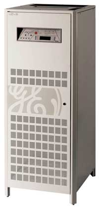
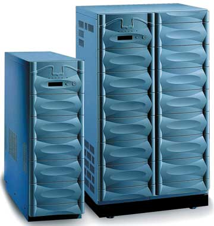
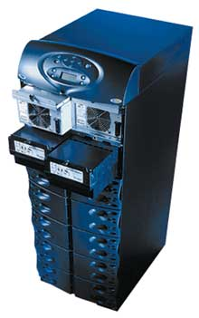
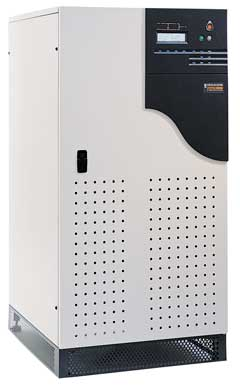
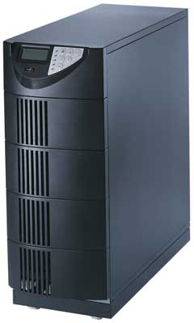
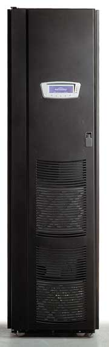

Александр Николов
anikolov@bytemag.ru
Согласно оценкам многих аналитических агентств и экспертов, современная Россия находится в состоянии активного роста в типичных для нашей страны отраслях производства. Учитывая к тому же благоприятную внешнеэкономическую конъюнктуру, отечественные компании могут сегодня себе позволить не только поддержание уже существующих корпоративных информационных систем и их модернизацию, но и гораздо более амбициозные проекты расширения ИТ-инфраструктуры, выводя свои системы на уровень мировых стандартов. Нисколько не отставая от частного бизнеса - а зачастую и опережая его по темпам внедрения инновационных разработок, - в этом же направлении движутся государственные структуры.
Обобщая, можно сказать так: там, где это востребовано и концептуально обоснованно, идет переход от небольших локальных систем обработки данных, когда каждой решаемой задаче соответствует специально выделенный сервер, к консолидированным центрам обработки данных (ЦОД) с адаптивной инфраструктурой, механизмами виртуализации вычислительных мощностей и их динамическим перераспределением между решаемыми задачами, в зависимости от потребностей последних и корпоративной ИТ-политики. Надо сказать, этот процесс представлен не единичными, уникальными случаями, а носит вполне устоявшийся характер, что дает возможность экстраполировать опыт частных проектов в некоторую обобщенную систему знаний.
Основываясь на доступных в открытых источниках статистически усредненных данных об уровне решаемых предприятиями задач и их потребностях в вычислительных мощностях, мы приняли следующее допущение: под центрами обработки данных мы будем понимать небольшие вычислительные центры или корпоративные серверные комнаты с числом 19-дюйм стоек для размещения серверов и сопутствующих систем от 5 до 15 и с потребляемой установленным оборудованием мощностью в пределах 10-100 кВ.А.
Вполне логично, что изменения, вносимые в ИТ-инфраструктуру предприятий, требуют и серьезного пересмотра всей стратегии энергоснабжения с целью ее адаптации под новые, гораздо более высокие требования к надежности, качеству и уровню защиты, поскольку потери от сбоев и отказов в сетях электропитания могут исчисляться сотнями тысяч, а иногда и миллионами долларов. Подход, казавшийся эффективным в прошлом и предполагающий использование одного ИБП на один защищаемый сервер, утратил свою актуальность со сменой парадигмы обработки данных. Использование множества ИБП в центре обработки данных не представляется оправданным или возможным ни по уровню итоговой стоимости, ни по чисто техническим аспектам - чрезмерно усложненное администрирование, трудности с коммутацией проводов и кабелей, непродуктивное использование дорогостоящих площадей ЦОД и т. д. На смену традиционным приходят интегрированные системы, позволяющие организовать комплексную защиту энергоснабжения центров обработки данных.
Опираясь на введенное определение центра обработки данных и используя в качестве отправной точки классификационную модель on-line ИБП большой мощности, предложенную аналитической компанией ITResearch (http://www.itreserach.ru), мы провели небольшое по времени, но достаточно масштабное по числу рассмотренных моделей исследование российского рынка ИБП, позволившее выделить актуальные на сегодняшний момент устройства, отвечающие сформулированным выше требованиям по уровню мощности.
Вместе с тем хорошо известно, что качественная и надежная система электроснабжения ЦОД состоит далеко не из одних ИБП, - в нее в обязательном порядке входят системы кондиционирования и вентиляции воздуха, резервные источники тока и прочие сопутствующие компоненты. Однако, как бы то ни было, краеугольным камнем корпоративных энергосистем остаются ИБП, обеспечивающие ЦОД первый уровень защиты в иерархии информационной безопасности. Понимая всю важность дополняющих ИБП систем, мы все же вынуждены отказаться от их рассмотрения в данной статье, поскольку, во-первых, тема ее грозит стать совершенно необъятной, а во-вторых, это означало бы переход от конкретных, чисто технических вопросов к идеологическим спорам о правильности построения систем энергоснабжения.
В обзоре рассматриваются модельные ряды восьми крупнейших компаний-поставщиков, оперирующих на российском рынке систем бесперебойного питания, чье оборудование было представлено и активно поставлялось заказчикам на протяжении 2004 г. либо анонсировалось в начале 2005 г. В список, составленный по данным отчетов компании ITResearch за последний квартал 2004 г., вошли зарубежные (APC, Chloride, GE Digital Energy, Liebert-HIROSS, MGE и Powerware) и отечественные (Inelt, NeuHaus Group) компании. Ряд фирм, также работающих в этом секторе оборудования, мы не рассматриваем - либо по причине относительно слабого присутствия на отечественном рынке, либо из-за отсутствия моделей, отвечающих тематике статьи (учитывая указанные выше ограничения на мощность ИБП). Ниже в обзоре компании следуют в алфавитном порядке, без учета занимаемых ими долей рынка и объемов продаж.
Продукция APC
Компания APC (http://www.apc.ru), ведущий мировой производитель систем защиты электропитания, представлена в данном сегменте моделью Silcon мощностью до 480 кВ.А с трехфазным входом и выходом; модульной моделью Symmetra LX с мощностью модуля от 4 до 16 кВ.А, трехфазным входом и однофазным выходом; трехфазной модульной системой Symmetra PX мощностью до 80 кВ.А и трехфазной системой Smart-UPS VT мощностью до 40 кВ.А.
ИБП Silcon, выполненный в виде запирающегося шкафа, построен по технологии дельта-преобразования и обеспечивает перегрузочную способность по напряжению в районе 200%. Не имея встроенных батарей, эта модель полагается на внешние аккумуляторы с интеллектуальной системой управления, при помощи которой зарядка идет с применением режима температурной компенсации.
ИБП совместим с резервными генераторами (клавишный отложенный старт) и оснащен цепями корректировки коэффициента мощности на входе, автоматическим внутренним байпасом, встроенной системой самотестирования. Для большей гибкости он предоставляет удаленное администрирование по сети. Возможно параллельное подключение до девяти устройств Silcon с целью наращивания мощности или резервирования.
Система бесперебойного питания Symmetra LX, основанная на модульной архитектуре с резервированием, допускает масштабирование по мощности, по продолжительности работы от аккумуляторов и по уровню готовности в зависимости от изменяющихся требований и призвана обеспечить наибольшую возможную непрерывность бизнес-процессов.
Усовершенствованная конструкция позволила значительно сократить занимаемую системой площадь и число мест в стойке для монтажа оборудования, ускорить и упростить развертывание и уменьшить затраты времени на ремонт. Встроенные средства сетевого администрирования, полное перекрытие диапазона возможных требований к мощности (с применением модулей мощностью от 4 до 16 кВ.А), масштабирование по времени работы от аккумуляторов, совместимость с резервными генераторами (клавишный отложенный старт) и системой InfraStruXure Manager, делают ИБП Symmetra LX средством защиты высокопроизводительного ИТ- и телекоммуникационного оборудования в компьютерных залах и небольших вычислительных центрах.
Список возможностей, доступных пользователям Symmetra LX, выглядит более чем внушительно. В него входит автоматический внутренний байпас, встроенный тест, уведомление об отключении батарей, автоматический перезапуск полезных нагрузок после выключения ИБП, регулировка частоты и напряжения, корректировка коэффициента мощности на входе, заменяемые самим пользователем в процессе работы батарейные модули, модули управления и силовые модули, уведомление о прогнозируемых отказах, резервируемые модули управления, автоматические предохранители, программируемая частота, интеллектуальное управление батареями, кондиционирование питания. И это далеко не все. Кроме того, для удобства наладки и обслуживания в Symmetra LX предусмотрен съемный лоток входного кабеля и заменяемые на месте распределительные панели.
Система бесперебойного питания Symmetra PX представляет собой единое устройство, составленное из набора модульных компонентов. Эта архитектура позволяет строить системы электропитания почти постоянной готовности и гибко наращивать их параметры в широком диапазоне значений. Symmetra PX отвечает высоким требованиям по уровню готовности и легко масштабируется по мощности и по продолжительности работы от аккумуляторов, занимая при этом очень небольшую площадь. В сочетании с полной линейкой ПО и дополнительным оборудованием APC эти ИБП обеспечивают четыре наиболее важных аспекта защиты вычислительного центра по электропитанию.
ИБП Symmetra PX имеют заменяемые пользователем в процессе работы батареи, модули управления и силовые модули, что в сочетании с параллельным соединением батарейных и силовых модулей и интеллектуальным управлением аккумуляторами (в том числе с температурной компенсацией в процессе зарядки) дает возможность серьезного масштабирования по нагрузке.
|  |
| Система бесперебойного питания APC Symmetra PX.
|
Система Smart-UPS VT - on-line ИБП с двойным преобразованием электроэнергии в компактном корпусе типа "башня", основанный на технологиях линии продуктов Smart-UPS и отличающийся удобством в использовании и масштабируемостью. В числе функциональных элементов ИБП, обеспечивающих дополнительное повышение уровня готовности, - встроенный переключатель сервисного байпаса, предназначенный для подачи напряжения на нагрузку непосредственно от сети во время замены модулей, и раздельный ввод питания ИБП и байпаса. Smart-UPS VT предлагает целый набор средств для повышения эффективности работы, обеспечения надежности и качества энергоснабжения - в частности, предусмотрен автоматический тест системы, регулировка частоты и напряжения на выходе, совместимость с резервными генераторами, корректировка коэффициента мощности на входе и ручной сервисный байпас.
Если продолжительности работы от аккумуляторов, обеспечиваемой внутренними батареями ИБП из стандартного комплекта поставки, оказывается недостаточно, можно подключить внешние батарейные шкафы. При этом работа с батареями организована весьма продуманно - пользователи могут заменить аккумуляторы прямо во время работы ИБП без дополнительных специальных инструментов, а зарядка батарей выполняется с температурной компенсацией.
ИБП Chloride
ИБП всемирно известного производителя Chloride (http://www.chloride.ru) в нашей стране поставляет российская Группа компаний Inelt (http://www.inelt.ru). В соответствии с классификацией Chloride в обзор попали устройства из так называемой группы большой мощности - это полностью трехфазные (вход и выход) ИБП серии 90-NET мощностью до 800 кВ.А и ИБП серии 70-NET мощностью до 60 кВ.А, а также ИБП из группы средней мощности - одно/трехфазное по входу семейство Linear Plus, рассчитанное на нагрузку до 10 кВ.А.
Серия 90-NET представляет собой результат применения современной цифровой технологии для обеспечения защиты электропитания - интеллектуальная система управления дает возможность выбрать один из двух режимов для оптимизации работы в зависимости от качества электропитания во входной сети - либо двойное on-line преобразование, либо цифровой линейно-интерактивный режим.
Использование в каскадах устройства IGBT-конвертора обеспечило 90-NET широкий диапазон приемлемого входного напряжения - вплоть до отклонения на 25% от номинального значения - без перехода на питание от аккумуляторных батарей. Кроме того, аппарат способен автоматически увеличивать номинальную выходную мощность на 10% при температуре окружающей среды не выше 25°С.
Устройства серии 90-NET выпускаются в диапазоне мощностей до 800 кВ.А, однако суммарная мощность параллельной системы может достигать и 6400 кВ.А - при соединении до восьми ИБП одинаковой мощности. Параллельные системы можно строить по распределенной или централизованной схеме, а также по схеме повышенной надежности High Fault Clearance (HFC). Последняя обеспечивает диспетчеризацию сбоев электропитания и вместе с тем позволяет переключаться на любые доступные резервные линии (для чего предусмотрена интеграция с автоматом выбора линии CROSS). В серии 90-NET предусмотрена процедура тестирования батарей с использованием опции Battery Management, что увеличивает их срок службы на 30%.
ИБП 90-NET обладает мощными коммутационными возможностями. Дополнительно, в качестве опций доступны комплект связи по протоколам Jbus и PROFIBUS, адаптер ManageUPSnet, трансформатор гальванической изоляции, панель дистанционного управления и сигнализации, ПО MopUPS Professional для управления и мониторинга ИБП.
Для повышения надежности работы систем 90-NET предлагается сервис удаленной диагностики LIFE.net, гарантирующий обслуживание ИБП высококлассными специалистами 24 часа в сутки 7 дней в неделю 365 дней в году.
Серия ИБП 70-NET - это решение, обеспечивающее высокую надежность энергоснабжения в сочетании с широкими возможностями контроля и диагностики и современной технологией управления циклом заряда батарей при минимальных затратах. Как и в случае с 90-NET, предусмотрен выбор режима работы ИБП: двойное преобразование, дающее идеальное качество электропитания и максимальную защиту нагрузки, или цифровой линейно-интерактивный режим, существенно экономящий эксплуатационные расходы благодаря высокому КПД. Применяемый в 70-NET алгоритм векторного контроля обеспечивает улучшенную работу при несбалансированной и динамически изменяющейся нагрузке, оптимальное распределение нагрузки между параллельными ИБП в системах с резервированием, устойчивость при коротких замыканиях в распределительных сетях бесперебойного электропитания.
Суммарные гармонические искажения на входе 70-NET составляют менее 8%, что обеспечивает полную совместимость с другими элементами систем электропитания, а благодаря цифровому контролю в параллельных системах можно соединять до восьми устройств, при этом доступны модульные расширяемые конфигурации с избыточностью. Батареи, обеспечивающие автономную работу ИБП, в моделях с мощностью от 10 до 40 кВ.А могут устанавливаться внутри корпуса ИБП.
70-NET полностью совместим с сервисом удаленной диагностики LIFE.net, что позволяет вести непрерывный контроль и диагностику компонентов ИБП в режиме реального времени, а также обеспечивает удаленное воздействие для предотвращения аварийных ситуаций, поиска и устранения неисправностей.
Кроме стандартной поставки 70-NET, существует специальная версия в промышленном исполнении. Она предназначена для работы в сложных условиях окружающей среды, оборудована встроенной гальванической изоляцией и подавителем волнового импульсного перенапряжения при переходных процессах.
Семейство Linear Plus - новая серия ИБП с одно- и трехфазным входом и однофазным выходом, номинальной мощностью до 10 кВ.А и корпусом в напольном или стоечном исполнении, позволяющая параллельно подключать до трех аппаратов. Устройства Linear Plus используют технологию двойного преобразования энергии, гарантируя высокий уровень защиты от всех видов помех в электрических сетях. ИБП обеспечивают широкое окно допустимого отклонения входного напряжения - в диапазоне 176-276 В для однофазного входа и 304-478 В для трехфазного входа. Допустимое отклонение входной частоты варьируется в пределах +-5%.
|  | Семейство ИБП Chloride Linear Plus.
|
Гибкость подключения Linear Plus позволяет строить конфигурации вида N+1, обеспечивающие максимальную надежность, и модульные масштабируемые параллельные конфигурации вида N+N, варьируя мощность систем. В числе прочих достоинств ИБП Linear Plus можно отметить инвертор с применением цифрового сигнального процессора, обеспечивающего показатель THD менее 5% для версии с однофазным входом и повышенную надежность работы системы.
Для Linear Plus также предусмотрена возможность подключения к сервису удаленной диагностики и контроля LIFE.net.
ИБП GE Digital Energy
ИБП под торговой маркой GE Digital Energy (GE DE) производства компании General Electric (подразделение GE Consumer & Industrial, http://www.geindustrial.com) на российском рынке представляет компания "Абитех" (http://www.abitech.ru).
В обзоре представлено следующее оборудование GE DE: ИБП серии LP (LP Series), которые делятся на однофазные ИБП LP 11 мощностью до 10 кВ.А, ИБП LP 31T и LP 31 с трехфазным входом и однофазным выходом (мощностью до 10 кВ.А и до 20 кВ.А соответственно) и трехфазные LP 33 с мощностью до 120 кВ.А, а также трехфазные ИБП серий SG (SG Series) мощностью до 200 кВ.А и SitePro с мощностью до 500 кВ.А.
ИБП серии LP относятся к классу независимых по частоте и напряжению интеллектуальных устройств повышенной надежности, с двойным преобразованием электроэнергии. Модели этой серии отличаются простотой установки и последующего технического обслуживания и надежной конструкцией, что позволяет применять их не только в серверных комнатах, но и в сложных промышленных условиях. Фирменная технология резервирования и распараллеливания - Redundant Parallel Architecture (RPA) - позволяет при помощи дополнительных блоков гибко наращивать мощность ИБП по мере увеличения энергопотребления и одновременно повышать надежность энергоснабжения, создавая систему, в которой отсутствуют потенциальные точки отказа.
Низкий уровень искажений на входе позволяет отказаться от дорогостоящих фильтров или завышения мощности резервных генераторов при построении энергосистем даже повышенной надежности. Вместе с тем высокий выходной коэффициент мощности делает ненужным приобретение ИБП избыточной мощности. При этом все модели серии LP отвечают самым высоким требованиям в том, что касается минимизации уровня искажений выходного напряжения.
Усовершенствованная система управления аккумуляторными батареями - Superior Battery Management (SBM) - предотвращает внезапные отказы элементов питания и продлевает срок их службы. Этой же цели служит имеющийся в ИБП режим ЕСО, в автоматическом режиме экономящий электроэнергию при стабильной работе энергосети.
ИБП серии SG представляют собой высокотехнологичные системы надежного электроснабжения любых ответственных технологических и бизнес-процессов, работающие в режиме Voltage & Frequency Independent (VFI). Чтобы соответствовать требованиям повышенной надежности энергоснабжения, системы на базе SG-серии используют технологию резервирования и параллельного соединения ИБП - Redundant Parallel Architecture, с помощью которой можно ставить в параллель до восьми устройств. При этом любой ИБП управляется по принципу равноправных устройств с резервированием всех критичных элементов и функций, в результате чего практически исключаются отказы в системе энергоснабжения. При необходимости совокупную мощность запараллеленных ИБП без особых проблем можно изменить - децентрализованный байпас позволяет легко отключать или подключать к системе энергоснабжения дополнительные устройства, что делает ее еще более гибкой. Наконец, дополнительный уровень надежности обеспечивают сервисный байпас и резервируемая система охлаждения.
|  | ИБП GE Digital Energy серии SG.
|
ИБП серии SitePro работают в режиме двойного преобразования и полностью отвечают требованиям международных стандартов к оборудованию типа VFI. Они имеют высокий коэффициент мощности, низкий уровень искажений на выходе даже при нелинейных нагрузках (менее 3%) и высокий КПД: 94,5% при полной и 98% при частичной нагрузке на батареи. Усовершенствованное управление батареями позволяет увеличить их ресурс и предотвратить отказы, а гальваническая развязка обеспечивает дополнительную защиту критичной нагрузки.
Устройства серии SitePro могут работать в различных режимах: двойное преобразование, стабилизация напряжения и частоты, преобразование частоты или интеллектуальное управление энергией (IEM), что придает системе энергоснабжения чрезвычайную гибкость.
Модельный ряд SitePro включает ИБП мощностью до 500 кВ.А, однако на объектах, где требуется большая мощность и избыточное резервирование, можно параллельно устанавливать до восьми ИБП SitePro, что обеспечивает защиту нагрузки общей мощностью до 4 МВ.А. Для построения подобных систем применяется фирменная архитектура RPA, а управление осуществляется по принципу равноправных устройств с резервированием всех критичных элементов и функций.
Продукция Inelt
Компания Inelt (http://www.ineltups.ru) представлена в обзоре собственным семейством INELT Monolith T, состоящим из моделей T10000 и T10000LT мощностью до 10 кВ.А. Обе модели обеспечивают надежную защиту оборудования, чистое синусоидальное выходное напряжение во всех режимах работы и коррекцию входного коэффициента мощности, используя двойное преобразование напряжения, мощные гальванические развязки и выходной изолирующий трансформатор. Благодаря инвертору напряжения, построенному на IGBT-транзисторах, ИБП Monolith T поддерживают работу с входным напряжением в диапазоне 160-300 В без перехода на батареи, при этом выходное напряжение может составлять 220, 230 или 240 В и варьироваться в пределах +-2%.
Для управления устройством можно воспользоваться алфавитно-цифровым ЖК-дисплеем, расположенным на передней панели, но гораздо удобнее и логичнее проводить администрирование дистанционно, используя специальное ПО, входящее в комплект поставки, и коммуникационный порт стандарта RS-232.
|  |
| Семейство ИБП INELT Monolith T.
|
Мощные ИБП Liebert HIROSS
Из продукции компании Liebert HIROSS (http://www.liebert-hiross.ru) мы рассматриваем три отвечающих критериям обзора мощных ИБП - это модульная система Nfinity суммарной мощностью до 20 кВ.А, с однофазными по входу и выходу моделями и моделями в конфигурации три фазы на вход - одна на выход; серия Hinet мощностью до 30 кВ.А с трехфазным входом и одно/трехфазным выходом и полностью трехфазная модель NXa с максимальной мощностью до 80 кВ.А.
ИБП Nfinity обеспечивает непрерывное, высококачественное питание критичных систем, защищая их от любых проблем, таких, как отсутствие и провалы напряжения, выбросы или шумовые помехи. Система питания Nfinity, масштабируемая по мощности от 4 до 20 кВ.А, предусматривает возможность работы в избыточной параллельной конфигурации N+x для устойчивой защиты по питанию при максимальной доступности систем. Конструкция шасси Nfinity позволяет максимально подстраиваться под меняющуюся структуру энергосети.
|  | ИБП Nfinity от Liebert HIROSS.
|
Модуль пользовательского интерфейса ИБП Nfinity имеет ЖК-дисплей и светодиодную мнемоническую диаграмму. Панель управления информирует пользователя о статусе ИБП, включая состояние модулей питания и батарей, и позволяет конфигурировать систему в соответствии с конкретными требованиями заказчиков. Есть также возможность просмотра журнала событий и инструкций по замене модулей.
Микропроцессорное управление повышает функциональность и надежность ИБП - при установке в Nfinity новых модулей они проводят самодиагностику перед тем, как войти в режим on-line, а при возникновении неисправностей переходят в режим off-line без нарушения целостности всей системы. Технология интеллектуального байпаса обеспечивает переключение на байпас в точке "0" и обратно, что гарантирует отсутствие негативных "ударных" воздействий на нагрузку и поддерживает непрерывность питания и максимальную доступность системы.
Интеллектуальные батарейные модули обеспечивают защиту от отсутствия напряжения, его всплесков, выбросов, шумов и провалов. Для получения синусоидальной формы входного тока 4 кВ.А энергомодули Nfinity используют выпрямитель с корректировкой коэффициента мощности (PFC) и технологию распределения токов, что позволяет системе более эффективно использовать сетевое питание и снизить отраженные искажения.
Серия Hinet представляет собой on-line ИБП с двойным преобразованием. Подавление всплесков и фильтрация на входе позволяет устройствам Hinet защитить нагрузку от помех или всплесков, идущих от основной сети электропитания, даже в режиме работы через байпас. Кроме того, ИБП проводит фильтрацию радиопомех на входе и выходе. Инвертор устройства использует широтно-импульсную модуляцию (PWM) на базе биполярных транзисторов с изолированным затвором (IGBT). ИБП Hinet оснащены встроенным статическим байпасом и интегрированным ручным байпасом, позволяющим подавать питание на нагрузку в непрерывном режиме при профилактическом обслуживании устройства.
Для настройки и управления в Hinet присутствует видеозвуковой дисплей, состоящий из ЖК- и светодиодной панелей, а также устройства звуковой сигнализации.
Стандартное напряжение на выходе трехфазных моделей - 400 В, однако возможна настройка на 380 и 415 В в процессе установки. Для однофазных моделей стандартное напряжение на выходе составляет 230 В; впрочем, в процессе установки его тоже можно откорректировать - на 220 и 240 В.
Суммарную мощность системы можно наращивать до 30 кВ.А, но данная опция доступна только для моделей с трехфазным выходом.
ИБП Liebert NXa предполагают параллельную работу до шести модулей ИБП без центрального контроллера или центрального статического ключа, что обеспечивает простоту и удобство, если требуется увеличить нагрузочную способность или повысить надежность системы путем подключения дополнительных блоков. Благодаря исключительно низкому коэффициенту гармонических искажений по току (менее 3%) и высокому коэффициенту мощности ИБП (0,99) модели серии NXa способны улучшать электрические параметры питающей электросети. Широкий диапазон допустимых значений входного напряжения и частоты, функции термокомпенсации зарядного напряжения батареи, защита от обратного тока, защита инвертора от короткого замыкания и функции коррекции фазы тока инвертора ИБП Liebert NXa гарантируют потребителям защиту капитальных вложений на приобретение и развертывание этих систем.
Удобство технического обслуживания обеспечивается встроенным сервисным байпасом, дополнительным обходным байпасом, функцией блокировки, возможностью аппаратного резервирования и поддержкой конфигурации "сдвоенная шина" (переключение нагрузки на вспомогательную шину питания). Благодаря фронтальному доступу к наиболее ответственным элементам системы и функциям автопроверки/самодиагностики упрощается процесс обслуживания и ремонта ИБП. Кроме того, повысить удобство эксплуатации призван привычный для большинства пользователей доступ к данным посредством экранных меню ЖК-дисплея.
Система Liebert NXa позволяет вести мониторинг энергоснабжения с использованием различных интерфейсов - доступны релейные платы, платы SNMP/Web для связи с компьютерными сетями и модули ModBus/Bus для обмена в промышленных протоколах.
Продукция MGE UPS
Производитель широкого спектра ИБП различной мощности - французская компания MGE UPS Systems (http://www.mgeups.com) представлена в обзоре следующими моделями: однофазный ИБП Comet EX RT мощностью до 11 кВ.А, система Comet EX RT 3:1 мощностью до 11 кВ.А с одно- и трехфазным входом и однофазным выходом, полностью трехфазная модель Galaxy 3000 мощностью до 30 кВ.А, модель Galaxy 1000 PW мощностью до 80 кВ.А с трехфазным входом и однофазным выходом, трехфазные системы Galaxy PW и Galaxy PW Harmony мощностью до 200 кВ.А и 120 кВ.А соответственно.
ИБП Comet EX RT выполнен в универсальном корпусе, что позволяет как применять его в виде отдельно стоящего устройства, так и размещать в стойке. Широкий диапазон входного напряжения - от 120 до 280 В - без перехода на питание от батарей, автоматическое тестирование батарей и защита от глубокого разряда, возможность горячей замены аккумуляторов и ИБП без прерывания работы защищаемой системы, автоматический и ручной байпас как стандартная функция - все это обеспечивает Comet EX RT высокую степень готовности к работе. Для достижения подобного эффекта используется питание от двух независимых источников - входы основной и байпасной линии могут быть общими или раздельными. Кроме того, легко обеспечивается горячий резерв системы, с использованием двух отдельных блоков ИБП, подключенных по схеме N+1.
Благодаря функциям управления с использованием разнообразных протоколов (HTTP/SNMP/XML/Telnet) и интеграции с популярными системами управления сетями (HP Openview, IBM Tivoli, CA Unicenter) ИБП Comet EX RT легко встраиваются в ИТ-системы предприятий. Интеграция с системами управления зданиями (Jbus), наличие систем контроля температуры и влажности с помощью датчика окружающей среды, способного инициировать своевременное отключение, монтаж батарей в специальную стойку для оптимизации используемой площади и совместимость с любыми объектами промышленного назначения создают надежную защиту для корпоративных систем и критических приложений от пропадания электропитания.
Модель Comet EX RT 3:1 представляет собой дальнейшее развитие серии Comet EX RT. Основное отличие ее от предшественницы состоит в преобразовании трехфазного напряжения на входе в однофазное на выходе; это автоматически снимает проблему равномерного распределения нагрузки по фазам, что не всегда просто при наличии большого парка компьютеров. Прочие же характеристики двух систем практически полностью совпадают.
ИБП Galaxy 3000 удовлетворяют наиболее строгим стандартам по электромагнитной совместимости, непрерывно обеспечивая высокое качество выходного напряжения независимо от искажений на входе и изменения процентного потребления энергии защищаемой нагрузкой.
Примененная в Galaxy 3000 система коррекции мощности (PFC) позволила увеличить входной коэффициент мощности на 20% по сравнению с обычным ИБП. Таким образом обеспечивается экономия средств пользователя - за счет снижения затрат на дизель-генераторы большей мощности и оборудования перед входом ИБП. Батареи Galaxy 3000 защищены от глубокого разряда, и температура на них непрерывно контролируется. Кроме того, циклический заряд батарей увеличивает в два раза срок службы последних. В силу модульного дизайна Galaxy 3000 выходную мощность ИБП можно увеличивать, не прерывая питания нагрузки, простым добавлением идентичного модуля ИБП.
Для наиболее критичных задач энергоснабжения предусмотрено параллельное подключение двух и более (до четырех) блоков Galaxy 3000. Кроме того, существует возможность разделить входы и подключить ИБП к двум независимым сетям электропитания для увеличения средней продолжительности работы между сбоями (MTBF).
ИБП Galaxy 1000 PW обеспечивает оптимальное и качественное электропитание для нагрузок большой мощности благодаря технологии двойного преобразования, высокой стойкости к короткому замыканию и пусковым токам, стабильности выходного напряжения независимо от характера нагрузки. Благодаря прочной конструкции, встроенному пылезащитному фильтру и удобной подводке кабелей подключения (сверху) ИБП подходят для использования в промышленной среде.
Присутствующая в каждом стандартном ИБП система DigiBat оптимизирует параметры заряда батарей для увеличения срока их службы. Она используется для расчета реального времени автономии и емкости батарей, а также прогнозирует оставшееся время службы аккумуляторов и время их замены. Автоматически проверяя каждый аккумулятор, опциональная система батарейного мониторинга предупреждает, когда они могут выйти из строя, и сообщает о сбое на каждом аккумуляторе.
Модульное параллельное подключение до четырех блоков - для увеличения мощности, резервирования по схемам 1/2 и N+1 либо изолированного резервирования с помощью коммутатора питания нагрузки Upsilon STS и модуля синхронизации - позволяет проводить непрерывное обновление и расширение системы энергоснабжения по мере роста ИТ-инфраструктуры.
Galaxy 1000 PW полностью совместим с дизель-генераторами, для чего предусмотрено подавление гармоник на входе, плавный запуск при работе с дизелем и последовательный пуск ИБП в параллельной конфигурации.
ИБП Galaxy PW, построенный по технологии двойного преобразования, обладает высокой стойкостью к коротким замыканиям и пиковым токам, стабильностью выходного напряжения при больших по величине и нелинейных нагрузках и обеспечивает качественное электропитание. Для увеличения мощности, резервирования по схемам 1/2 и N+1, а также изолированного резервирования с применением коммутатора питания нагрузки Upsilon STS и системы синхронизации, применяется параллельное подключение до четырех блоков. Система мониторинга работы батарей DigiBat у этой модели также входит в стандартную комплектацию.
|  | ИБП Galaxy PW от MGE UPS.
|
Комбинация активного фильтра THM с ИБП позволяет сэкономить на счетах за электроэнергию, а также уменьшить параметры энергосистемы и дизель-генератора за счет значения коэффициента мощности более 0,95, уменьшенного до 4% КНИ и сокращенного на 20% потребления тока.
ИБП Galaxy PW Harmony представляет собой модификацию модели Galaxy PW с изначально предустановленной системой активных фильтров, за счет чего улучшаются характеристики и снижаются затраты для системы в целом.
Системы NeuHaus
Российская компания NeuHaus Group (ups.nhs.ru) поставляет в рассматриваемой категории ИБП три серии - однофазную по входу и выходу Integra Pro с мощностью до 24 кВ.А при работе в параллельном исполнении; семейство PowerSystem Multi, включающее модели с одно- и трехфазным входом и однофазным выходом мощностью до 20 кВ.А, а также полностью трехфазные (по входу и выходу) модели с мощностью до 30 кВ.А; и наконец, сверхмощную систему PowerSystem с моделями мощностью до 20 кВ.А, имеющими три фазы на вход и одну на выход, или полностью трехфазными ИБП, рассчитанными на мощность до 600 кВ.А.
Серия Integra Pro использует модернизированный цифровой процессор, максимально упрощающий управление работой устройства и предоставляющий удобный доступ к системной информации. ЖК-дисплей панели управления обеспечивает контроль таких параметров работы ИБП, как входное/выходное напряжение, напряжение и уровень заряда батарей, входная/выходная частота, уровень нагрузки, температура воздуха внутри корпуса, режим работы ИБП и многие дополнительные характеристики, в реальном времени. Фирменная технология управления двунаправленным инвертором позволяет добиваться параллельного масштабирования системы по схеме N+1 без дополнительного оборудования. Для запуска системы в параллель необходимо всего лишь подключить шину контроля и управления работой, при этом максимальное количество агрегатов, устанавливаемых в параллель, равно четырем.
|  | ИБП NeuHaus серии Integra Pro.
|
В модели Integra Pro имеется интеллектуальная система управления циркуляцией воздуха внутри корпуса - при возрастании защищаемой нагрузки включаются дополнительные вентиляторы, обеспечивающие надлежащее охлаждение внутренних узлов и блоков. В ИБП предусмотрена система аварийной остановки под названием Emergency Power Off (EPO), предназначенная для экстренного отключения устройства, если в этом возникает необходимость. Система работы в экономичном режиме (ECO Mode) автоматически переключает нагрузку на линию байпаса, если параметры входной сети находятся в допустимых пределах, а в противном случае возвращает ИБП к режиму питания от инвертора.
Серия ИБП PowerSystem Multi, используя технологию преобразования, построенную на IGBT-транзисторах, обеспечивает большой диапазон - до +-25% отклонения входных напряжений без перехода на батареи, пониженный уровень гармонических искажений по входу, 5%-ный диапазон входных частот без перехода на питание от батарей и перегрузочную способность по выходу до 200% от номинального тока в течение 7 с.
К особенностям ИБП этой серии можно отнести возможность подключения в параллель до восьми агрегатов, защиту ИБП и обслуживающего персонала от возникновения обратного тока, перефазировку нагрузки для синхронизации напряжения и тока (входной коэффициент мощности 1.0).
В качестве опции потребителям доступно оборудование, расширяющее возможности ИБП PowerSystem Multi: изолирующий трансформатор, дополнительные батарейные шкафы, дополнительное внешнее зарядное устройство, комплект для подключения ИБП в параллель, управляющее ПО PowerShield2 в расширенной версии, удаленная индикаторная панель мониторинга. Модели ИБП мощностью 10, 15, 20 и 30 кВ.А выпускаются также в стоечном исполнении - PowerSystem MR.
Серия on-line ИБП PowerSystem с двойным преобразованием напряжения по технологии VFI и изолирующим трансформатором на выходе инвертора позволяет подключать в параллель до шести агрегатов. ИБП оснащен системой фильтров для защиты от перенапряжения и высокочастотных помех, в том числе фильтром гармоник входного тока (КНИ до 8%) и автоматической защитой от обратного тока в режиме байпаса. Из особенностей этой модели можно указать следующие: возможность работы с нелинейной нагрузкой - максимально допустимый крест-фактор нагрузки свыше 3:1, повышенная помехозащищенность нагрузки за счет гальванической развязки вход/выход - трансформатор треугольник-звезда между инвертором и нагрузкой. ИБП также можно использовать в качестве частотного преобразователя 50/60 Гц.
Микропроцессорное управление и контроль обеспечивают низкий уровень акустических шумов при работе ИБП и позволяют проводить программируемый тест аккумуляторных батарей. Используя дополнительную панель мониторинга состояния агрегата и ПО PowerShield, можно организовать мониторинг основных параметров сетевого напряжения и нагрузки, а также автоматический выход из ОС и приложений в случае аварий на линиях питания. Кроме того, в PowerSystem предусмотрены схема экстренного отключения в экстремальных ситуациях - EPO (Emergency Power Off) и режим ECO mode, позволяющий снижать потребление электроэнергии агрегатом при хорошем качестве входного напряжения.
ИБП Powerware
Компания Eaton (http://www.powerware.com/russia) представляет в рассматриваемой категории, пожалуй, самый обширный ряд ИБП - в него входят модель Powerware 9155 с трехфазным входом, однофазным выходом и мощностью до 15 кВ.А; модульная модель Powerware 9170+ с общей мощностью до 18 кВ.А; полностью трехфазная Powerware 9355 с мощностью до 15 кВ.А; трехфазная по входу и выходу модель Powerware 9305 с защитой по питанию до 80 кВ.А; полностью трехфазное устройство повышенной мощности Powerware 9340 с уровнем защиты до 130 кВ.А; высокомощная модель Powerware 9390 с нагрузкой до 160 кВ.А; Powerware B1000 мощностью до 25 кВ.А с трехфазным входом и однофазным выходом и модель Powerware B4000 мощностью до 250 кВ.А с тремя фазами на входе и выходе.
ИБП Powerware 9155 использует современный IGBT-выпрямитель для активной коррекции входного коэффициента мощности (0,99) и бестрансформаторную технологию преобразования с высоким КПД при КНИ тока менее 5%, что обеспечивает полную защиту оборудования от наиболее частых проблем с электропитанием. Для большей надежности в Powerware 9155 предусмотрен автоматический статический и ручной байпас.
Используемая в ИБП технология резервирования Hot Sync позволяет объединять многомодульные конфигурации в параллель без кабелей связи между модулями и обеспечивает надежность и гибкость системы энергоснабжения. Используя технологию Hot Sync, системы Powerware 9155 могут работать в параллель как в режиме горячего резерва, так и в режиме наращивания мощности.
Технология Advanced Battery Management (ABM) продлевает срок службы аккумуляторных батарей в Powerware 9155 на 50% по сравнению с традиционным методом зарядки.
В комплект поставки входит пакет ПО, позволяющего вести мониторинг за работой ИБП посредством протокола SNMP или Web-интерфейса. Кроме того, в случае промышленного применения или использования Powerware 9155 в системах управления зданиями существует возможность мониторинга по протоколам ModBus/Jbus.
ИБП Powerware 9170+ благодаря технологии двойного преобразования напряжения обеспечивает полную защиту оборудования от всех возможных проблем с входным электропитанием, предлагая истинное резервирование N+x как силового электропитания нагрузки, так и всей логики управления. ИБП имеет широкий диапазон допустимых входных напряжений - 176-276 В для работы без перехода на аккумуляторные батареи, коэффициент входной мощности 0,98 и 88%-ный КПД при работе в нормальном режиме. Для увеличения срока службы аккумуляторов в модели 9170+ применяется технология управления зарядом батарей Advanced Battery Management, позволяющая увеличить этот показатель на 50%.
Модель Powerware 9170+ поставляется в стоечном (трех-, шести- и девятимодульном) исполнении, при этом мощность ИБП можно наращивать модулями по 3 кВ.А (и/или дополнительными батарейными блоками) по мере роста потребности системы в электропитании. В комплект входит бесплатный пакет ПО, включая LanSafe, обеспечивающий широкие возможности мониторинга параметров системы питания и нагрузки через SNMP/Web-совместимые адаптеры. Предусмотрен и дополнительный слот для установки прочих опциональных адаптеров.
Модель Powerware 9355 выполнена с использованием современной IGBT-технологии - ее выпрямитель обеспечивает коррекцию коэффициента мощности (входной коэффициент мощности равен 0,99), а инвертор оптимизирован для работы с современными серверными нагрузками (выходной коэффициент мощности равен 0,9), использующими схемы компенсации коэффициента потребляемой мощности. IGBT-выпрямитель и система коррекции коэффициента мощности обеспечивают КНИ входного тока менее 5%. Благодаря современной бестрансформаторной технологии Powerware 9355 обеспечивает высокий КПД преобразования.
За счет технологии управления зарядом батарей ABM существенно продлевается срок службы аккумуляторных батарей ИБП по сравнению с традиционными методами зарядки. Ручной сервисный байпас позволяет проводить сервисное обслуживание без прерывания питания нагрузки.
В серии 9355 конструктивно предусмотрена возможность мониторинга всей системы электропитания по интерфейсу SNMP/Web, что упрощает встраивание Powerware 9355 в любую ИТ-структуру, а поддержка интерфейсов ModBus/Jbus позволяет легко интегрировать ИБП в промышленную сеть или современную систему управления зданием.
ИБП семейства Powerware 9355 могут работать в параллель друг с другом на основе технологии Powerware Hot Sync, что позволяет наращивать мощность всей системы бесперебойного электропитания и строить высоконадежные системы с резервированием.
ИБП Powerware 9305 обеспечивает защиту нагрузки от любых возможных проблем с входным электропитанием, при этом оборудование может как находиться в одном помещении с ИБП, так и быть распределенным по всей площади предприятия. Таким образом, значительно экономятся средства за счет создания мощной централизованной системы защищенного электропитания. Бестрансформаторная технология преобразования обеспечивает ИБП высокую эффективность и невысокую стоимость. Кроме того, это один из самых компактных ИБП, занимающий минимум площади помещения.
Модель Powerware 9305 обладает весьма широким диапазоном допустимых входных напряжений, что позволяет ИБП реже переходить на аккумуляторные батареи, сохраняя их энергию для случаев полного пропадания входного питания. Системы Powerware 9305 поддерживают работу в параллели и резервирование, для чего используется технология Hot Sync. Увеличение срока службы аккумуляторов на 50% достигается при помощи уже упоминавшейся технологии управления зарядом батарей ABM.
ИБП Powerware 9340 уверенно работает в любых условиях окружающей среды - его надежная конструкция способна выдержать тяжелые производственные условия независимо от качества основной питающей сети. Повышенная надежность заложена в ИБП еще при его проектировании - разработчики использовали архитектуру с распределенной логикой контроля и управления и резервирование основных схем и блоков. Новая технология выпрямления обеспечивает минимальный уровень гармонических искажений - Powerware 9340 защищает нагрузку, будучи чрезвычайно дружественным к сети и не требуя установки дополнительных фильтров. Система Harmonic Control обеспечивает менее 3% нелинейных искажений входного тока, что наилучшим образом отражается на совместной работе с дизель-генератором.
Как и в других моделях Powerware, доступна система параллельной работы и резервирования Hot Sync, а также технология управления зарядом батарей ABM, увеличивающая срок службы аккумуляторов на 50%.
Помимо основного комплекта поставки, заказчики могут приобрести следующее дополнительное оборудование: внешние батарейные шкафы и стойки, адаптеры стандарта Х-слот для расширения возможностей обмена информацией, SNMP/Web-адаптеры ConnectUPS, релейные адаптеры стандарта AS/400, модемы, адаптеры шин Modbus/Jbus, модуль для параллельной работы - Hot Sync SPM 9340, трансформаторы для гальванической изоляции и преобразования напряжения, внешний сервисный байпас.
Модель Powerware 9390, созданная с учетом более чем сорокалетнего опыта компании в построении систем управления и защиты питания, объединяет в себе все лучшее, что свойственно современному ИБП: технология двойного преобразования напряжения, высокая производительность, эффективное управление батареями, изменяемая архитектура, масштабируемость, высокая плотность мощности, гарантийная поддержка и сервисное обслуживание.
|  | ИБП Powerware 9390.
|
Высокий КПД (94%) значительно уменьшает общую стоимость владения системой за счет сокращения затрат на электроэнергию. Низкий уровень нелинейных искажений потребляемого тока (КНИ менее 5%) обеспечивает совместимость ИБП с любыми электроустановками, в первую очередь с дизель-генераторами. Входной коэффициент мощности ИБП 0,99 позволяет применять дизель-генераторы минимальной мощности или более эффективно использовать их возможности для питания других потребителей. Выходной коэффициент мощности ИБП, равный 0,9, соответствует требованиям современных нагрузок.
Для обеспечения параллельной работы нескольких ИБП используется технология Powerware Hot Sync, позволяющая объединить до четырех ИБП в параллель без дополнительного оборудования. Используя специальный коммутационный шкаф, можно объединить до восьми ИБП, доведя суммарную мощность системы до 1280 кВ.А.
Система управления зарядом ABM, применяемая в Powerware 9390, не только существенно увеличивает время жизни аккумуляторных батарей, но и сокращает время их зарядки. Встроенные в ИБП средства управления постоянно контролируют состояние батарей и проводят их периодическое тестирование. Дополнительно Powerware 9390 обеспечивает температурную компенсацию напряжения заряда батарей, что также продлевает срок их службы.
ИБП Powerware B1000 предназначен для защиты однофазной нагрузки большой мощности и может работать параллельно или в режиме горячего резерва пары ИБП. Модель отличается повышенной устойчивостью при работе с нелинейной нагрузкой и высокой надежностью внутренних модулей, благодаря использованию распределенного управления и питания.
Большой выбор опций - входной фильтр гармонических искажений, гальваническая развязка, различные конфигурации внешних батарейных шкафов, внешний байпас, ПО для мониторинга и управления работой ИБП, адаптеры для удаленного мониторинга системы - позволяет удовлетворить любые требования к конфигурации системы для самых разных применений.
Система Powerware B4000 имеет модульную конструкцию с использованием распределенного управления и питания и с возможностью параллельного включения модулей общей мощностью до 2 МВ.А. К услугам потребителей высокотехнологичная система управления мощностью Advanced Power Management (APM), современная система управления зарядом аккумуляторных батарей с температурной компенсацией и большой набор опций: 12-пульсный выпрямитель, входной фильтр гармонических искажений, гальваническая развязка, различные конфигурации внешних батарейных шкафов, внешний байпас, ввод силовых кабелей через верхнюю часть ИБП, ПО и адаптеры для мониторинга и управления работой Powerware B4000.
***
Завершая обзор, можно отметить, что теоретически и в некоторой степени даже на практике рассмотренные в нем модели можно было бы развести по двум независимым, идеологически различным категориям: ИТ-решения, встраиваемые в существующую систему электропитания (в основном устройства с однофазным входом), и инфраструктурные решения в сфере инженерных коммуникаций (с трехфазным входом). Однако поскольку точной, устраивающей все заинтересованные стороны и непротиворечивой по определениям методики отнесения той или иной модели к какой-либо из категорий не существует, в большинстве случаев пришлось бы действовать по наитию, руководствуясь неформализуемыми внутренними представлениями, вследствие чего итоговый результат отличался бы весьма изрядной долей субъективизма. Это, вероятно, не лучшее решение, однако саму идею подобной классификации не стоит отвергать на корню, и, вполне возможно, мы еще вернемся к ней в последующих номерах журнала.